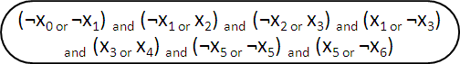
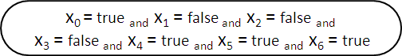
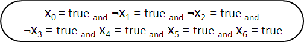
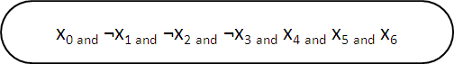
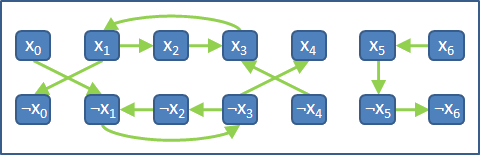
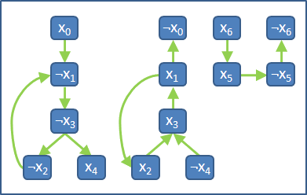
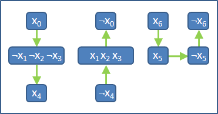

2-Satisfiability（2-SAT）

X0、X1、……是變數，變數的值只會是true或者false。變數可以重複出現在式子當中，變數還可以加上not運算子。每個括號裡面只有兩個變數，or與and的格式是固定的。

如何設定變數的值，讓整個式子成為true呢？
簡易分析
2-SAT式子主要以and銜接。每個括號必須都是true，整個式子才是true。
括號內部只有一個or，「左右都是true」或者「左true右false」或者「右true左false」，整個括號才是true。
2-Satisfiability，換句話說
2-SAT是要設定每一個變數的值，讓整個式子成為true。
一個變數的值只會是true或者false。一個變數X，要嘛X = true，要嘛X = false。至於X = false也可以寫成notX = true。
2-SAT的解答，就是每個變數X，「X = true」與「notX = true」兩個選一個。要不選X，要不選notX，不會一起選。X與notX有著勢不兩立的關係。

2-SAT問題，換句話說，每個變數X，都看成兩個元件X與notX，然後選一個當作解答，讓每個括號成立，讓整個式子成立。

一個括號當中共有兩個元件，如果其中一個確定不選，就必須選另一個了，如此括號才會成立。
UVa 10319 11294 11861 11930 ICPC 3211 4452
以有向圖作為模型

學過「Topological Sort」的讀者，可以發現，把「受限關係」建立成有向圖，是一個很常見的模式。
一、將變數相互影響的情形，表示成一張有向圖。
替每個變數X建立兩個點，分別代表X = true與notX = true。
變數有N種，有向圖上就有2N個點。
二、依序處理每個括號。
甲、當括號內變數不同時，例如(A or B)。
回、不選A（選了notA），就一定要選B：建立一條notA -> B的邊。
回、不選B（選了notB），就一定要選A：建立一條notB -> A的邊。
乙、當括號內變數相同時，例如(A or A)。
回、一定要選A，一定不能選notA：建立一條notA -> A的邊。
（從A可以觸及的節點一定都要選。）
丙、當括號內變數相同，卻一正一反時，例如(A or notA)。
回、不管是選A或是選notA，結果都會是true：不必建立邊。
對稱性
【待補文字】

判斷式子是否可以成為true
三、檢查每一個節點：
甲、如果某個變數X和notX都不得不選，就產生矛盾：有環經過X與not X。
因此整個式子為false。
乙、如果都沒有發生矛盾，表示至少會有一種合理的設定方式。
因此整個式子為true。
如果有一個環同時經過X和notX，則整個式子為false。
想要檢驗圖上是否有環經過X與notX，一個簡單的做法是：收縮圖上所有環，看看X與notX是否收縮於在同一點。如此就不必窮舉圖上所有的環。
實作時，可以不必縮環，直接看看X與notX是否在同一個Strongly Connected Component即可──SCC即是一群交疊在一起的環。請參考「Component」。

找出其中一組變數設定方式，讓整個式子成為true。
四、每一對X與notX都從中選出一個作為2-SAT的解答。
有向圖上有2N個點，總共會選出N個點。
把clause全部建成圖。如果令X = true，那麼X暨子孫就必須通通都選，同時notX暨祖先也必須統統不選；如果令notX = true，那麼情況恰恰顛倒。
一、建立有向圖。
二、尋找所有Strongly Connected Component。
三、收縮每個Strongly Connected Component，成為有向無環圖DAG。
四、依序判斷每個變數是否為解：
甲、嘗試X作為解：若X的子孫存在非解者，則X非解。
乙、嘗試notX作為解：若notX的子孫存在非解者，則notX非解。
丙、確認X與not X何者為解後，將其子孫確實標記為解。
逐一嘗試，時間複雜度為O(VE)。能找出字典順序最小的解。
找出最小一組變數設定方式，讓整個式子成為true。
一、建立有向圖。
二、尋找所有Strongly Connected Component。
三、收縮每個Strongly Connected Component，成為有向無環圖DAG。
四、尋找縮圖的Topological Order。
五、在縮圖上，以Topological Order的反序，列出解。
時間複雜度為O(V+E)。